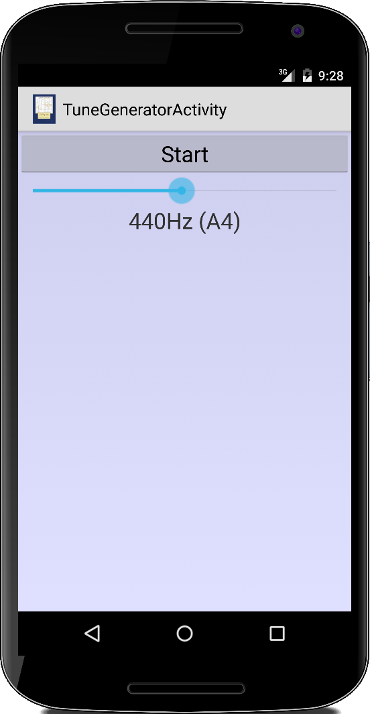

Multimedia
Wir haben schon im Kapitel zu Sensoren gesehen, dass moderne Android Geräte viel mehr sind als nur dumme Telefone mit einer Internetverbindung. In diesem Kapitel werden wir uns mit den Multimediafähigkeiten von Android Geräten beschäftigen. Natürlich kann man die zum Abspielen von MP3 Dateien und Videos verwenden, aber mit dem Mikrofon und der Kamera als "Sensoren", eröffnen sich auf einmal ganz neuen Anwendungsszenarien. In diesem Kapitel werden wir daher zwar die Grundlagen der Multimediamöglichkeiten kennen lernen, aber auch etwas über den Tellerrand hinaus blicken.
.
 PlayAudio
PlayAudio
Um Audiodateien abzuspielen verwenden wir den MediaPlayer:
MediaPlayer player = MediaPlayer.create(this, R.raw.trap_beat); player.start();
Der MediaPlayer kann mit Audiodateien die z.B. im Resourceverzeichnis /raw/ sind arbeiten, aber auch mit Assets oder ganz normalen Dateien auf der internen oder externen SD Karte:
String path = Environment.getExternalStorageDirectory().getPath()
+ "/Music/trap_beat.mp3";
MediaPlayer.setDataSource(path);
In der Regel sollte man vor dem start() noch die prepare() Methode aufrufen.
Der MediaPlayer hat ganz viele Methoden, die für uns interessantesten sind:
- pause(): pausiert das Abspielen, mit start() geht's wieder weiter.
- stop(): beendet das Abspielen.
- isPlaying(): sagt einem, ob gerade was abgespielt wird.
- getDuration(): gibt an wie lange ein Stück dauert, in Millisekunden.
- getCurrentPosition(): gibt die momentane Abspielposition, in Millisekunden.
- seekTo(int msec): damit kann man die Abspielposition setzen, auch in Millisekunden.
- setLooping(boolean looping): lässt den MediaPlayer das Stück immer wieder wiederholen.
- setVolume(float leftVolume, float rightVolume): setzt die Lautstärke.
Wichtig ist noch zu wissen wie man den MediaPlayer wieder ausschaltet, das ist nämlich nicht ganz trivial:
protected void onDestroy() {
if (player != null) {
player.stop();
player.release();
player = null;
}
super.onDestroy();
}
Wir müssen also zunächst die stop() Methode aufrufen. Danach müssen wir unbedingt die release() Methode aufrufen, und schließlich macht es Sinn mit player = null dem GarbageCollector (Müllsammler) mitzuteilen, dass er jetzt aufräumen darf. Der Grund dafür ist, dass es sich beim MediaPlayer eigentlich um eine C++ Klasse mit einem ganz dünnen Java Wrapper handelt. Die release() Methode macht nichts anderes als den Destructor der C++ Klasse aufzurufen. Wenn wir das nicht machen, then "all hell breaks loose", wie die Amerikaner zu sagen pflegen.
.
SimpleSoundGenerator
Eine andere Möglichkeit Töne zu generieren ist mit dem AudioTrack. Dabei handelt es sich um eine Klasse die Arrays von 16-Bit Werten (shorts) abspielt. Zu verwenden ist die Klasse denkbar einfach:
AudioTrack audioTrack = new AudioTrack( AudioManager.STREAM_MUSIC, SAMPLE_RATE, AudioFormat.CHANNEL_OUT_MONO, AudioFormat.ENCODING_PCM_16BIT, 2 * data.length, AudioTrack.MODE_STATIC); audioTrack.flush(); audioTrack.write(data, 0, data.length); audioTrack.play();
Wichtig ist dabei ob man Stereo oder Mono abspielen will und die SAMPLE_RATE, z.B.
private final int SAMPLE_RATE = 44100;
entspricht der Rate mit der typischerweise CDs aufgenommen werden. Mögliche Werte sind 8000, 11025, 16000, 22050 und 44100.
Zum Testen können wir mit der folgenden Methode einen Sinuston einer vorgegebenen Frequenz erzeugen:
private final double FREQUENCY = 440;
private short[] generateSound(int bufferSize) {
short[] data = new short[bufferSize];
double factor = 2 * Math.PI / (SAMPLE_RATE / FREQUENCY);
for (int i = 0; i < data.length; i++) {
data[i] = (short) (Short.MAX_VALUE * Math.sin(factor * i));
}
return data;
}
Auch beim AudioTrack handelt es sich eigentlich um eine C++ Klasse, d.h., wir müssen nach dem Aufruf der stop() Methode noch die release() Methode aufrufen, damit der AudioTrack ordentlich aufgeräumt wird.
.
RecordAudio
Natürlich können wir nicht nur Töne erzeugen, sondern wir können auch welche aufnehmen, mit der AudioRecord Klasse. Sie funktioniert ähnlich wie die AudioTrack Klasse:
AudioRecord audioRecord = new AudioRecord( MediaRecorder.AudioSource.MIC, SAMPLE_RATE, AudioFormat.CHANNEL_IN_MONO, AudioFormat.ENCODING_PCM_16BIT, bufferSize); audioRecord.startRecording(); int length = audioRecord.read(buffer, 0, bufferSize); audioRecord.stop(); audioRecord.release();
In der Regel würden wir das Mikrofon als Quelle verwenden, es gibt aber auch andere Quellen, z.B. ein Telefongespräch. Wichtig ist der Buffer, der muss eine Mindestgröße haben, die können wir aber erfragen:
int bufferSize = AudioRecord.getMinBufferSize( SAMPLE_RATE, AudioFormat .CHANNEL_IN_MONO,AudioFormat.ENCODING_PCM_16BIT); short[] buffer = new short[bufferSize];
Wenn wir längere Aufnahmen machen möchten, müssen wir um das read() einfach eine Schleife basteln:
// record for roughly 2 seconds:
for (int i = 0; i < 20; i++) {
int length = audioRecord.read(buffer, 0, bufferSize);
for (int j = 0; j < length; j++) {
dos.writeShort(buffer[j]);
}
}
In diesem Beispiel schreiben wir die Daten einfach in einen DataOutputStream, den wir vorher angelegt haben:
File f = new File(Environment.getExternalStorageDirectory(), "AudioRecording.pcm"); FileOutputStream fos = new FileOutputStream(f); BufferedOutputStream bos = new BufferedOutputStream(fos); DataOutputStream dos = new DataOutputStream(bos);
Das so erzeugte File ist eine "PCM" Datei, enthält also die Audiodaten im Rohformat. Wir könnten sie natürlich mit der AudioTrack Klasse wieder abspielen. Der MediaPlayer (und andere Musikplayer) verstehen das PCM Format allerdings nicht. Das macht eigentlich wenig Sinn, denn das Windows WAV Format ist nichts anderes als das PCM Format mit einem Header versehen. Den kann man auch selbst anfügen, wie das gemacht wird kann man auf StackOverflow nachlesen [1].
Eine Anmerkung noch, natürlich müssen wir den Nutzer um Erlaubnis fragen, ob wir Audioaufnahmen machen dürfen:
<uses-permission android:name="android.permission.RECORD_AUDIO" />
.
PlayVideo
Das Abspielen von Videos ist ähnlich einfach wie das Abspielen von Audios. Zunächst definieren wir die UI und verwenden das VideoView Widget:
<LinearLayout xmlns:android="http://schemas.android.com/apk/res/android"
android:layout_width="match_parent"
android:layout_height="match_parent">
<VideoView
android:id="@+id/videoView"
android:layout_width="match_parent"
android:layout_height="match_parent"
android:layout_gravity="center" />
</LinearLayout>
Dem VideoView muss man lediglich mitteilen wo die Videodatei zu finden ist,
VideoView video = (VideoView) findViewById(R.id.videoView);
//video.setVideoPath("/sdcard/socialweb.mp4");
Uri uri = Uri.parse("android.resource://" + getPackageName()
+ "/" + R.raw.socialweb);
video.setVideoURI(uri);
video.start();
und mit start() wird das Video abgespielt. Der VideoView hat die gleichen Methoden wie der MediaPlayer was das Abspielen, Pausieren, usw. angeht.
Was allerdings signifikant schwieriger ist, ist Videos zu finden, die der VideoView abspielen kann. Zunächst sieht es nämlich so aus, wie wenn er jede MP4 Datei abspielen kann. Dem ist aber nicht so. Man findet dazu erfreulich wenig Dokumentation und auch die Gerätehersteller scheinen da Unterschiede zu machen. Auf jeden Fall nach langwieriger Suche und gefühlt zehn Viren und Trojanern die ich mir dabei auf meinem Windowsrechner geholt habe, habe ich es geschafft eine Datei zu konvertieren.
.
CameraPreview
Fast alle Android Geräte haben Cameras heutzutage. Sehen wir uns mal an wie wir darauf zugreifen können. Auch hier müssen wir erst wieder die UI spezifizieren, dieses Mal verwenden wir den SurfaceView:
<LinearLayout xmlns:android="http://schemas.android.com/apk/res/android"
android:layout_width="match_parent"
android:layout_height="match_parent">
<SurfaceView
android:id="@+id/surfaceView"
android:layout_width="wrap_content"
android:layout_height="wrap_content"
android:gravity="center_horizontal" />
</LinearLayout>
Im Code holen wir uns eine Referenz auf selbigen,
SurfaceView surface = (SurfaceView) this.findViewById(R.id.surfaceView); SurfaceHolder holder = surface.getHolder();
und lassen uns seinen SurfaceHolder geben (keine Ahnung was das ist). Den holder brauchen wir, weil wir nämlich einen Callback dranhängen wollen:
holder.addCallback(new SurfaceHolder.Callback(){
private Camera mCamera;
@Override
public void surfaceChanged(SurfaceHolder holder, int format, int width, int height) {
// do nothing
}
@Override
public void surfaceCreated(SurfaceHolder holder) {
try {
mCamera = Camera.open();
mCamera.setPreviewDisplay(holder);
mCamera.startPreview();
} catch (Exception e) {
Log.e("CameraPreviewActivity", e.getMessage());
}
}
@Override
public void surfaceDestroyed(SurfaceHolder holder) {
mCamera.stopPreview();
mCamera.release();
mCamera = null;
}
});
Dieser SurfaceHolder.Callback hat zwei Methoden die uns interessieren: die surfaceCreated() wird aufgerufen wenn der SurfaceView das erste Mal angezeigt wird. Hier verbinden wir die Kamera mit dem SurfaceView über den Holder. Die Kamera weiß dann was zu tun ist. Die Methode surfaceDestroyed() wird aufgerufen wenn wir fertig sind, hier müssen wir wieder ordentlich aufräumen.
Natürlich möchte man nicht, dass jede beliebige Anwendung einfach auf die Kamera zugreifen darf, ohne dass der Nutzer zugestimmt hat. Deswegen muss man im AndroidManifest noch um Erlaubnis fragen:
<uses-permission android:name="android.permission.CAMERA" />
Auch scheint der Preview im Landscape Modus besser zu funktionieren, deswegen sollte man vielleicht noch die Orientierung der App auf Landscape fixieren:
<activity
android:name="variationenzumthema_ch8.CameraPreviewActivity"
android:screenOrientation="landscape" />
.
RecordVideo
Unsere CameraPreview Activty zeigt zwar an was die Kamera sieht, aufnehmen tut sie aber noch nix. Dazu braucht man die MediaRecorder Klasse. Die ist ne Diva und will gut behandelt werden. Man kann die Details in [2] nachlesen, aber grob geht es wie folgt: erst mal muss man alles vorbereiten:
private boolean prepareVideoRecorder(String fileName) {
mMediaRecorder = new MediaRecorder();
// Step 1: Unlock and set camera to MediaRecorder
mCamera.unlock();
mMediaRecorder.setCamera(mCamera);
// Step 2: Set sources
mMediaRecorder.setAudioSource(MediaRecorder.AudioSource.CAMCORDER);
mMediaRecorder.setVideoSource(MediaRecorder.VideoSource.CAMERA);
// Step 3: Set a CamcorderProfile (requires API Level 8 or higher)
mMediaRecorder.setProfile(CamcorderProfile.get(CamcorderProfile.QUALITY_HIGH));
// Step 4: Set output file
// mMediaRecorder.setOutputFile(getOutputMediaFile(MEDIA_TYPE_VIDEO).toString());
mMediaRecorder.setOutputFile(fileName);
// Step 5: Set the preview output
mMediaRecorder.setPreviewDisplay(holder.getSurface());
// Step 6: Prepare configured MediaRecorder
try {
mMediaRecorder.prepare();
} catch (IllegalStateException e) {
Log.d(getLocalClassName(), "IllegalStateException preparing MediaRecorder: " + e.getMessage());
releaseMediaRecorder();
return false;
} catch (IOException e) {
Log.d(getLocalClassName(), "IOException preparing MediaRecorder: " + e.getMessage());
releaseMediaRecorder();
return false;
}
return true;
}
Danach kann man dann mit
mMediaRecorder.start();
loslegen. Mit stop() hört's dann wieder auf, und am Ende sollte man wieder aufräumen:
private void releaseMediaRecorder() {
if (mMediaRecorder != null) {
mMediaRecorder.reset(); // clear recorder configuration
mMediaRecorder.release(); // release the recorder object
mMediaRecorder = null;
mCamera.lock(); // lock camera for later use
}
}
Natürlich will der SurfaceHolder auch gut behandelt werden, und die Kamera sowieso, deswegen ufert der Code dann doch etwas aus.
.
TextToSpeech
Mit der immer größeren Popularität von Siri und Alexa hat sich die Erwartungshaltung der Nutzer bzgl. Sprachausgabe und Spracherkennung von Apps geändert. Interessanterweise ist das gar nicht so schwer zu implementieren. Wir beginnen mit der Sprachausgabe.
Zunächst müssen wir sicherstellen, dass unser Gerät die richtigen Einstellungen hat: über die Accessibility-Settings (Language Settings in älteren Geräten) muss die Sprachausgabe eingeschaltet sein. Manchmal muss man aus dem Google Play Store auch die "Google Text-to-speech" App nachinstallieren.
Die eigentliche Arbeit macht dann die TextToSpeech Klasse. Diese initialisiert man, gibt ihr noch mit in welcher Sprache sie sprechen soll, und dann lässt man sie einfach drauf los plappern:
TextToSpeech tts =
new TextToSpeech(getApplicationContext(),
new TextToSpeech.OnInitListener() {
@Override
public void onInit(int status) {
if (status != TextToSpeech.ERROR) {
tts.setLanguage(Locale.US);
tts.speak("hi there.", TextToSpeech.QUEUE_FLUSH, null, null);
tts.speak("how are you?", TextToSpeech.QUEUE_ADD, null, null);
} else {
Log.e("TextToSpeechActivity", "No speech engine available.");
}
}
}
);
Wenn wir den TextToSpeech nicht mehr benötigen, dann sollten wir ihn anhalten, stop(), und herunterfahren, shutdown():
@Override
public void onPause() {
if (tts != null) {
tts.stop();
tts.shutdown();
tts = null;
}
super.onPause();
}
.
SpeechRecognition
Das Gegenstück zu Sprachausgabe ist Spracherkennung. Auch das ist überraschend einfach mittels eines Intents, dem RecognizerIntent:
Intent intent = new Intent(RecognizerIntent.ACTION_RECOGNIZE_SPEECH);
intent.putExtra(RecognizerIntent.EXTRA_LANGUAGE_PREFERENCE, "en");
intent.putExtra(RecognizerIntent.EXTRA_LANGUAGE_MODEL,
RecognizerIntent.LANGUAGE_MODEL_FREE_FORM);
intent.putExtra(RecognizerIntent.EXTRA_MAX_RESULTS, 3);
startActivityForResult(intent, REQUEST_CODE);
Mit startActivityForResult() starten wir den Intent, und warten auf das Resultat:
protected void onActivityResult(int requestCode, int resultCode, Intent data) {
if (requestCode == REQUEST_CODE) {
if (resultCode == RESULT_OK) {
ArrayList<String> matches =
data.getStringArrayListExtra(RecognizerIntent.EXTRA_RESULTS);
tv.setText(matches.get(0));
} else {
tv.setText("Something went wrong: " + resultCode);
}
} else {
super.onActivityResult(requestCode, resultCode, data);
}
}
In den Extras des data Intent finden wir dann, was die Spracherkennung erkannt hat. Da die Erkennung nicht immer hunderprozentig funktioniert, liefert uns der Intent gleich mehrere mögliche Alternativen, deswegen bekommen wir eine Liste. Das erste Element dieser Liste, ist das wahrscheinlichste, deswegen benutzt man selbiges in der Regel.
Noch zwei Anmerkungen: in den älteren Android-Versionen benötigt man noch eine aktive Internetverbindung, in den neueren geht die Spracherkennung aber auch offline. Und ähnlich wie bei der Sprachausgabe kann nicht jedes Handy automatisch Spracherkennung: manchmal muss man diese einschalten oder erst installieren. Wenn aber die normale Google-Suche mit Spracherkennung funktioniert, dann funktioniert auch unser Code.
.
Review
Wir haben gesehen wie wir Audiodateien mit dem MediaPlayer bzw. der Klasse AudioTrack abspielen können. Audioaufnahmen erledigen wir mir der AudioRecord Klasse. Für das Abspielen von Videodateien verwenden wir den SurfacView, für die Aufnahme den MediaRecorder. Außerdem haben wir gesehen wie wir mit dem SurfaceView und der Camera Klasse einen Livefeed der Kamera anzeigen können. Schließlich haben wir noch mit der Klasse TextToSpeech und dem Intent ACTION_RECOGNIZE_SPEECH Sprachsynthese respektive Spracherkennung betrieben.
.
Projekte
Nach dieser kurzen Einführung in die grundlegenden Multimedia-Klassen wird es jetzt richtig interessant. Zum Aufwärmen erzeugen wir ein paar Töne und sehen uns das mit den Filtern noch einmal an. Interessanter wird es mit dem Mikrofon: da versuchen wir uns an einem Schnarchdetektor und einem Equalizer. Die Echo App ist schon anspruchsvoller und obwohl nicht perfekt ist auch die Sonar App ziemlich cool. Mit der Fourieranalyse wird es noch interessanter, wenn wir mit FlappyBall lernen Melodien zu pfeifen, wir unser Klavier endlich mal ordentlich stimmen können und uns ein Live-Spektrogramm unserer Stimme ansehen können. Mit der Kamera messen wir dann Distanzen, nehmen Fotos auf, schreiben einen Surveillance Service und faken eine 360 Grad Kamera. Dann kommt eine kleine Demonstration von Augmented Reality und FaceDetection ist mit Android eine triviale Übung. Mit Hilfe von Text-to-Speech erzeugen wir dann AudioBooks, aus unserem alten Freund ELIZA machen wir einen ChatBot, und schließlich wird noch diktiert. Allerdings aus unserem alten Handy eine echte IP Kamera zu machen schießt wahrscheinlich den Vogel ab.
.
TuneGenerator
Wenn mal gerade keine Stimmgabel zur Hand ist, und wir unsere Gitarre oder unser Klavier schnell stimmen müssen, dann können wir das mit unserer TuneGenerator App. Wir gehen mal davon aus, dass wir eine "Gleichstufige Stimmung" [3] wollen, dann sind nämlich die Frequenzen der Töne sehr einfach zu berechnen [4]:
private double getPitch(int key) {
double base = Math.pow(2.0, 1.0 / 12.0);
double pitch = 440.0 * Math.pow(base, (key - 49));
return pitch;
}
Dabei ist der Kammerton (A4 in USA) die 49te Taste von links auf einem normalen Klavier. Wenn wir jetzt noch wissen wollen wie der Ton heißt (im amerkanischen System), dann verwenden wir die Methode getPitchName():
private final String[] pitchNames =
{ "C", "C#", "D", "D#", "E", "F", "F#", "G", "G#", "A", "A#", "B" };
private String getPitchName(int key) {
String pitchName = pitchNames[(key + 8) % 12];
pitchName += ((key + 8) / 12);
return pitchName;
}
Wie wir einen Sinuston einer bestimmten Frequenz erzeugen, haben wir ja bereits in der generateSound() Methode im SimpleSoundGenerator weiter oben gesehen. Wir können aber noch einen Schritt weitergehen und kontinuierlich einen Ton erzeugen. Dazu muss der Sound allerdings in einem separaten Thread abgespielt werden:
public class TuneGeneratorActivity extends Activity implements Runnable {
...
@Override
public void onCreate(Bundle savedInstanceState) {
...
new Thread(this).start();
}
@Override
public void run() {
bufferSize = AudioTrack.getMinBufferSize(SAMPLE_RATE, AudioFormat.CHANNEL_OUT_MONO,
AudioFormat.ENCODING_PCM_16BIT);
audioTrack = new AudioTrack(AudioManager.STREAM_MUSIC, SAMPLE_RATE, AudioFormat.CHANNEL_OUT_MONO,
AudioFormat.ENCODING_PCM_16BIT, 2 * bufferSize, AudioTrack.MODE_STREAM);
audioTrack.flush();
int step = 0;
while (true) {
if (isPlaying) {
generateSound(step++);
audioTrack.write(data, 0, data.length);
if (step == 1) {
audioTrack.play();
}
}
}
}
...
}
Dabei ist interessant, dass die play() Methode nur einmal aufgerufen wird, und wir danach die Audiodaten kontinuierlich über die write() Methode an den AudioTrack liefern.
.
Piano
Wir haben ja bereits im ersten Semester eine kleines Pianoprogramm geschrieben. Mit unserer selbstgeschriebenen ACM Graphicslibrary können wir das natürlich ganz einfach in eine App umwandeln. Nur das Abspielen der Töne müssen wir noch implementieren.
Wir könnten den MediaPlayer verwenden und ähnlich wie im ersten Semester vorgefertigte Soundfiles abspielen. Aber wir können auch die AudioTrack Klasse verwenden. Das gibt uns viel mehr Kontrolle. Wie wir gerade gesehen haben, sollte die Tonerzeugung in einem separate Thread laufen. Das können wir zusammenfassen in der Klasse Player, die als eigenständiger Thread läuft:
public class Player implements Runnable {
private int SAMPLE_RATE = 16000;
private int bufferSize = 0;
public boolean isPlaying = false;
private final BlockingQueue<short[]> queue;
public Player(BlockingQueue<short[]> queue, int SAMPLE_RATE, int bufferSize) {
this.queue = queue;
this.SAMPLE_RATE = SAMPLE_RATE;
this.bufferSize = bufferSize;
}
public void run() {
try {
isPlaying = true;
AudioTrack audioTrack = new AudioTrack(AudioManager.STREAM_MUSIC,
SAMPLE_RATE, AudioFormat.CHANNEL_OUT_MONO,
AudioFormat.ENCODING_PCM_16BIT, bufferSize,
AudioTrack.MODE_STREAM);
audioTrack.flush();
audioTrack.play();
while (isPlaying) {
short[] data = queue.take();
audioTrack.write(data, 0, data.length);
}
audioTrack.stop();
audioTrack.release();
} catch (InterruptedException e) {
Log.i("Player", e.getMessage());
}
}
}
Der Player bekommt seine Daten über eine BlockingQueue geliefert (Producer-Consumer), er ist der Consumer, und spielt einfach die Daten ab, wie sie über die BlockingQueue reinkommen. Gefüttert wird die BlockingQueue vom Producer, unserem GraphicsProgram. Dort werden die Daten in der mousePressed() Methode erzeugt und in die BlockingQueue geschrieben:
public void mousePressed(int x, int y) {
GObject obj = getElementAt(x, y);
if (obj != null) {
for (int i = 0; i < keys.length; i++) {
if (obj == keys[i]) {
try {
double pitch = getPitch(pitches[i] + 40);
short[] data = generateSound(pitch);
queue.put(data);
} catch (InterruptedException e) {
e.printStackTrace();
}
}
}
}
}
.
WaveformGenerator
Wenn einem Sinuswellen zu langweilig sind, dann kann man natürlich auch beliebige andere Wellenformen erzeugen, z.B. Sinus-, Rechteck-, Sägezahn-, Dreieck- oder Treppenwellenformen. Dazu müssen wir lediglich die generateSound() Methode aus dem SimpleSoundGenerator etwas anpassen:
private void generateSound(int bufferSize) {
data = new short[bufferSize];
double factor = 2 * Math.PI / (SAMPLE_RATE / FREQUENCY);
for (int i = 0; i < data.length; i++) {
data[i] = (short) (Short.MAX_VALUE * 0.95 * function(factor, i));
}
}
wobei die function() jetzt eben nicht mehr nur eine einfache Sinusfunktion ist, sondern je nach dem Wert der Variablen waveForm eine der gewünschten Wellenformen:
private double function(double factor, int i) {
switch (waveForm) {
case 1:
return functionSquare(factor, i);
case 2:
return functionSawTooth(factor, i);
case 3:
return functionTriangle(factor, i);
case 4:
return functionStaircase(factor, i);
default:
return functionSin(factor, i);
}
}
Hier ein paar kleine Codebeispiele wie man die verschiedenen Wellenformen erzeugen kann:
private double functionSin(double factor, int i) {
return Math.sin(i * factor);
}
.
private double functionSquare(double factor, int i) {
double x = i * factor;
x = x % (2 * Math.PI);
if (x < Math.PI) {
return -1;
} else {
return +1;
}
}
.
private double functionSawTooth(double factor, int i) {
double x = i * factor;
x = x % (2 * Math.PI);
return x / (Math.PI) - 1;
}
.
private double functionTriangle(double factor, int i) {
double x = i * factor;
x = x % (2 * Math.PI);
if (x < Math.PI) {
return 2 * x / (Math.PI) - 1;
} else {
return 2 * (2 * Math.PI - x) / (Math.PI) - 1;
}
}
.
private double functionStaircase(double factor, int i) {
double x = i * factor;
x = x % (2 * Math.PI); // 0..2*PI
x = x / (2 * Math.PI); // 0..1
x = x * 10; // 0..9.999
int s = (int) x; // 0..9
s = s - 5; // -5..4
return s / 5.0;
}
.
Natürlich kann man die Wellenformen auch noch grafisch in einem GraphView darstellen, oder wir verbinden den Kopfhörerausgang mit einem Oszilloskop.
.
AudioFilter
Im Kapitel zu Sensoren haben wir von Hochpass- und Tiefpassfiltern gehört. Noch mal kurz zur Erinnerung, ein Hochpass lässt die hohen Frequenzen passieren, ist aber für niedere Frequenzen undurchlässig, und beim Tiefpass ist es umgekehrt. Das kann man natürlich sehr schön demonstrieren mit Audiodateien.
Wie kommen wir aber an die Daten in einer Audiodatei? Für die Standard-Windows-Wave Dateien ist das relativ einfach. Wir öffnen sie mit einem DataInputStream,
InputStream is = getResources().openRawResource(R.raw.trap_beat2); BufferedInputStream bis = new BufferedInputStream(is); DataInputStream dis = new DataInputStream(bis); readWavHeader(dis);
und in readWavHeader() entfernen wir einfach die ersten 44 Bytes:
private void readWavHeader(DataInputStream dis) throws IOException {
for (int i = 0; i < 11; i++) {
dis.readInt();
}
}
Danach lesen wir dann Shorts mit readShort(dis) aus dem DataInputStream:
while (dis.available() > 0) {
short[] data = new short[bufferSize];
int i = 0;
while (dis.available() > 0 && i < bufferSize) {
data[i] = readShort(dis);
i++;
}
...
Der Grund warum wir die Methode readShort(dis) benötigen hat damit zu tun, dass Windows "little endian" ist [5] und wir die zwei Bytes des Shorts umdrehen müssen:
private short readShort(InputStream in) throws IOException {
return (short) (in.read() | (in.read() << 8));
}
Nachdem wir die Daten jetzt eingelesen haben, müssen wir sie filtern, je nach Modus entweder die niederfrequenten oder die hochfrequenten:
...
short[] filtered = null;
switch (mode) {
case 1:
LOW_PASS_FACTOR = 0.3f;
filtered = filterLowFrequencies(data);
break;
case 2:
LOW_PASS_FACTOR = 0.9f;
filtered = filterHighFrequencies(data);
break;
default:
filtered = data;
break;
}
audioTrack.write(filtered, 0, filtered.length);
}
Die beiden Methoden wenden dabei die Filter auf die Daten an:
private short[] filterLowFrequencies(short[] recordingData) {
short[] highPassArray = new short[recordingData.length];
short avg = 0;
for (int i = 0; i < recordingData.length; i++) {
avg = lowPass(recordingData[i], avg);
highPassArray[i] = highPass(recordingData[i], avg);
}
return highPassArray;
}
private short[] filterHighFrequencies(short[] recordingData) {
short[] lowPassArray = new short[recordingData.length];
short avg = 0;
for (int i = 0; i < recordingData.length; i++) {
avg = lowPass(recordingData[i], avg);
lowPassArray[i] = avg;
}
return lowPassArray;
}
wobei lowPass() und highPass() die gleichen sind wie im Sensorkapitel:
private short lowPass(short current, short average) {
return (short) (average * LOW_PASS_FACTOR + current * (1 - LOW_PASS_FACTOR));
}
private short highPass(short current, short average) {
return (short) (current - average);
}
.
Loudness
Wir haben schon lange keine Spiele mehr programmiert, es wird wieder Zeit. Bei Loudness geht es darum die Größe eines Balls (GOval) von der Lautstärke abhängig zu machen.
Wir schreiben also ein GraphicsProgram und im setupUI() fügen wir einen Ball hinzu:
public class LoudnessActivity extends GraphicsProgram {
...
public void run() {
waitForTouch();
setupUI();
// game loop...
}
private void setupUI() {
setBackground(Color.WHITE);
ball = new GOval(BALL_MIN_SIZE, BALL_MIN_SIZE);
ball.setFillColor(Color.GREEN);
ball.setFilled(true);
add(ball, getWidth() / 2, getHeight() / 2);
}
}
Die Größe des Balls soll von der Lautstärke abhängen, also
private void changeBallSize(int loudness) {
int size = loudness * getWidth() / MAX_LOUDNESS + BALL_MIN_SIZE;
int x = (getWidth() - size) / 2;
int y = (getHeight() - size) / 2;
ball.setBounds(x, y, size, size);
}
Nun kommen wir zur entscheidenden Frage, wie ermitteln wir die Lautstärke? Wir nehmen einfach den Durchschnitt der Absolutwerte der Rohdaten:
private int calculateLoudness(short[] copy) {
double average = 0;
for (int i = 0; i < copy.length; i++) {
average += Math.abs(copy[i]);
}
average /= copy.length;
return (int) average;
}
und die Rohdaten kommen von unserer AudioRecord Klasse:
public void run() {
...
short[] data = new short[bufferSize];
AudioRecord audioRecord = new AudioRecord(...);
audioRecord.startRecording();
while (isRecording) {
int length = audioRecord.read(data, 0, bufferSize);
int loudness = calculateLoudness(data);
changeBallSize(loudness);
pause(DELAY);
}
...
}
.
SnoringService
Bevor ich die SnoringApp hatte, hat sich meine Frau immer beschwert, dass ich so laut schnarche. Aber jetzt seitdem ich die SnoringApp habe, kann auch meine Frau wieder ruhig schlafen. Die SnoringApp: ist ihren Preis wert, ich kann mir mein Leben gar nicht mehr ohne vorstellen.
Die SnoringApp ist in Prinzip nichts anderes als die Loudness Activity oben, mit dem Unterschied, dass wir ab einer gewissen Lautstärke einen Alarm starten (oder ein Vibrieren, Elektroschock, oder was auch immer notwendig ist um den Schnarchenden aufzuwecken):
if (averageLoudness > LOUDNESS_THRESHOLD) {
isRecording = false;
audioRecord.stop();
// start alarm
Intent intent = new Intent(this, SnoringAlarmActivity.class);
startActivity(intent);
}
Eine subtile Änderung gibt es aber doch: da die Loudness Activity ein GraphicsProgram ist, wird im Hintergrund ein eigener Thread gestartet (deswegen ja auch die run() Methode). Für unsere Games ist das notwendig, damit der GameLoop unabhängig vom UI Thread, also dem Zeichnen ist. Bei der Aufnahme und dem Abspielen von Audio ist das ähnlich: das soll eigentlich in einem separaten Thread laufen. Da wir für die SnoringApp ja kein GraphicsProgram verwenden, müssen wir das selbst machen:
public class SnoringServiceActivity extends Activity implements Runnable { ... @Override public void onCreate(Bundle savedInstanceState) { super.onCreate(savedInstanceState); new Thread(this).start(); } @Override public void run() { ... } }
Die SnoringAlarmActivity ist einfach unsere PlayAudio Activity mit einem Knopf zum Ausschalten des Alarms. Für den Alarm selbst können wir natürlich irgendeine Audiodatei verwenden, oder aber wir benutzen den RingtoneManager:
Uri alert = RingtoneManager.getDefaultUri(RingtoneManager.TYPE_ALARM);
player = new MediaPlayer();
player.setDataSource(context, alert);
player.setAudioStreamType(AudioManager.STREAM_ALARM);
player.prepare();
player.start();
Für Testzwecke implementieren wir das als Activity, viel sinnvoller ist es aber das in einen Service umzuwandeln. Das hat vor allem Vorteile für den Ladezustand unserer Batterie.
.
Equalizer
Im Kapitel zu Sensoren haben wir die Klasse GraphView kennengelernt. Die kann man natürlich auch verwenden um unsere Audiodaten zu visualisieren, also einen Equalizer zu bauen. Genau wie in den zwei Apps oben, verwenden wir die AudioRecord Klasse,
public void run() {
...
AudioRecord audioRecord = new AudioRecord(...);
audioRecord.startRecording();
while (isRecording) {
int length = audioRecord.read(data, 0, bufferSize);
for (int j = 0; j < data.length; j++) {
gv.addDataPoint(data[j]);
}
gv.postInvalidate();
}
audioRecord.stop();
...
}
und schicken die Daten an einen GraphView, den wir in der onCreate() initialisiert haben:
public void onCreate(Bundle savedInstanceState) {
super.onCreate(savedInstanceState);
gv = new GraphView2(this);
gv.setMin(Short.MIN_VALUE);
gv.setMax(Short.MAX_VALUE);
gv.setStyle(GraphView2.GraphStyle.LINE);
gv.setColor(Color.RED);
gv.setStrokeWidth(1);
setContentView(gv);
new Thread(this).start();
}
Easy.
.
AudioRecorder
Es gibt zahlreiche Apps im Google Play Store die die Funktion eines Diktiergerätes haben. Mit den beiden Klassen AudioRecord und AudioTrack können wir so eine App auch selbst umsetzen.
Wir beginnen mit dem Aufnahmeteil unserer Anwendung: die Anwendung soll einen Button haben mit dem wir die Aufnahme starten und stoppen können,
public class AudioRecorderActivity extends Activity {
...
private boolean isRecording = false;
@Override
public void onCreate(Bundle savedInstanceState) {
super.onCreate(savedInstanceState);
setContentView(R.layout.audio_recorder_activity);
final Button btn = (Button) findViewById(R.id.btnRecord);
btn.setOnClickListener(new OnClickListener() {
@Override
public void onClick(View v) {
if (isRecording) {
isRecording = false;
btn.setText("Record");
} else {
isRecording = true;
btn.setText("Stop recording");
Date date = new Date();
SimpleDateFormat dateFormat = new SimpleDateFormat("yyyyMMdd_HHmmss");
String fileName = dateFormat.format(date) + ".pcm";
Recorder recorder = new Recorder(fileName);
new Thread(recorder).start();
}
}
});
...
}
}
Die Aufnahme selbst lagern wir in die innere Klasse Recorder aus, die ein eigener Thread ist:
class Recorder implements Runnable {
private String fileName;
public Recorder(String fileName) {
this.fileName = fileName;
}
@Override
public void run() {
File f = new File(Environment.getExternalStorageDirectory(), fileName);
try {
BufferedOutputStream bos = new BufferedOutputStream(new FileOutputStream(f));
DataOutputStream dos = new DataOutputStream(bos);
int bufferSize = AudioRecord.getMinBufferSize(SAMPLE_RATE, AudioFormat.CHANNEL_IN_MONO,
AudioFormat.ENCODING_PCM_16BIT);
short[] buffer = new short[bufferSize];
AudioRecord audioRecord = new AudioRecord(MediaRecorder.AudioSource.MIC, SAMPLE_RATE,
AudioFormat.CHANNEL_IN_MONO, AudioFormat.ENCODING_PCM_16BIT, bufferSize);
audioRecord.startRecording();
while (isRecording) {
int length = audioRecord.read(buffer, 0, bufferSize);
for (int j = 0; j < length; j++) {
dos.writeShort(buffer[j]);
}
}
audioRecord.stop();
audioRecord.release();
dos.close();
bos.close();
runOnUiThread(new Runnable() {
@Override
public void run() {
words.add(0, fileName);
((ArrayAdapter) lv.getAdapter()).notifyDataSetChanged();
}
});
} catch (Exception e) {
Log.i(getLocalClassName(), e.getMessage());
}
}
}
Die Klasse Recorder muss deswegen eine innere Klasse sein, damit sie auf die Instanzvariable isRecording zugreifen kann. Interessant ist hier auch wie wir aus der Klasse Recorder auf den UI Thread mittels der runOnUiThread() Methode zugreifen: wenn wir fertig sind mit der Aufnahme, soll die neue Aufnahme ja in der UI angezeigt werden. Man hätte das auch mit einem AsyncTask tun können, aber ab und zu wollen wir ja auch mal was Neues lernen.
Kommen wir zu dem Teil der mit dem Abspielen zu tun hat. Hier ist es nicht nötig einen separaten Thread zu implementieren (es sei denn man möchte das Abspielen unterbrechen können). In der onCreate() fügen wir dafür noch einen ListView hinzu, der die bereits gemachten Aufnahmen auflisten soll:
@Override
public void onCreate(Bundle savedInstanceState) {
...
words = getFilesWithExtension(".pcm");
lv = (ListView) findViewById(R.id.listview);
ArrayAdapter<String> adapter =
new ArrayAdapter<String>(this, android.R.layout.simple_spinner_item, words);
lv.setAdapter(adapter);
lv.setOnItemClickListener(new OnItemClickListener() {
@Override
public void onItemClick(AdapterView<?> parent, View view, int position, long id) {
String fileName = (String) ((ArrayAdapter) lv.getAdapter()).getItem(position);
playAudio(fileName);
}
});
}
Die getFilesWithExtension() Methode listet einfach alle Dateien mit einer bestimmten Endung auf:
private List<String> getFilesWithExtension(final String extension) {
List<String> words = new ArrayList<String>();
File f = Environment.getExternalStorageDirectory();
File[] files = f.listFiles(new FilenameFilter() {
public boolean accept(File dir, String name) {
return name.toLowerCase().endsWith(extension);
}
});
for (int i = 0; i < files.length; i++) {
words.add(0, files[i].getName());
}
return words;
}
Das Einzige was jetzt noch fehlt ist die playAudio() Methode:
private void playAudio(String fileName) {
File f = new File(Environment.getExternalStorageDirectory(), fileName);
try {
BufferedInputStream bis = new BufferedInputStream(new FileInputStream(f));
DataInputStream dis = new DataInputStream(bis);
int bufferSize = AudioTrack.getMinBufferSize(SAMPLE_RATE,
AudioFormat.CHANNEL_OUT_MONO, AudioFormat.ENCODING_PCM_16BIT);
AudioTrack audioTrack = new AudioTrack(AudioManager.STREAM_MUSIC,
SAMPLE_RATE, AudioFormat.CHANNEL_OUT_MONO,
AudioFormat.ENCODING_PCM_16BIT, bufferSize,
AudioTrack.MODE_STREAM);
audioTrack.flush();
audioTrack.play();
while (dis.available() > 0) {
short[] buffer = new short[bufferSize];
int i = 0;
while (i < bufferSize && dis.available() > 0) {
buffer[i] = dis.readShort();
i++;
}
audioTrack.write(buffer, 0, bufferSize);
}
audioTrack.stop();
audioTrack.release();
dis.close();
bis.close();
} catch (Exception e) {
Log.i(getLocalClassName(), e.getMessage());
}
}
Diese öffnet die ausgewählte PCM Datei, liest die Daten in einen Buffer und sendet den Buffer an den AudioTrack. Sieht komplizierter aus als es ist.
.
Echo
Ein App aus dem Bereich der Psychoakkustik ist die EchoActivity. Hier geht es darum sich selbst zu hören, allerdings um ein paar zehntel Millisekunden zeitversetzt. Das Interessante dabei: man fängt an zu stottern, bzw. hört sich wie ein Idiot an. Der Effekt funktioniert allerdings nur mit Kopfhörer und Mikrofon.
Für die App verwenden wir zum einen die Player Klasse die wir bereits in unserer Piano Activity verwendet haben. Zusätzlich benötigen wir das Gegenstück dazu, die Recorder Klasse, die komplett analog dazu aufgebaut ist:
public class Recorder implements Runnable {
private int SAMPLE_RATE = 16000;
private int bufferSize = 0;
public boolean isRecording = false;
private final BlockingQueue<short[]> queue;
public Recorder(BlockingQueue<short[]> queue, int SAMPLE_RATE, int bufferSize) {
this.queue = queue;
this.SAMPLE_RATE = SAMPLE_RATE;
this.bufferSize = bufferSize;
}
@Override
public void run() {
try {
isRecording = true;
short[] data = new short[bufferSize];
AudioRecord audioRecord = new AudioRecord(MediaRecorder.AudioSource.MIC, SAMPLE_RATE,
AudioFormat.CHANNEL_IN_MONO, AudioFormat.ENCODING_PCM_16BIT, bufferSize);
audioRecord.startRecording();
while (isRecording) {
int length = audioRecord.read(data, 0, bufferSize);
// make a copy and add to queue
short[] copy = new short[bufferSize];
System.arraycopy(data, 0, copy, 0, copy.length);
queue.put(copy);
}
audioRecord.stop();
audioRecord.release();
} catch (Exception e) {
Log.i("Recorder", e.getMessage());
}
}
}
Das Einzige was hier besonders ist, dass wir eine Kopie des data Arrays machen. Das ist notwendig, da es sich ja bei einem Array um einen Referenzdatentypen handelt. Es ist nicht auszuschließen, dass die AudioRecord Klasse diese Referenz weiterverwendet um da neue Daten reinzuschreiben, was die alten überschreiben würde. Wenn wir aber eine Kopie haben, dann kann uns das egal sein.
Mit diesen Vorarbeiten wird die eigentlich Echo Activity ganz einfach:
public class EchoActivity extends Activity {
...
private int bufferFactor = 5;
private Player player;
private Recorder recorder;
private BlockingQueue<short[]> queue;
@Override
public void onCreate(Bundle savedInstanceState) {
...
Button btn = (Button) findViewById(R.id.button);
btn.setOnClickListener(new OnClickListener() {
@Override
public void onClick(View v) {
int minBufferSize = AudioRecord.getMinBufferSize(SAMPLE_RATE,
AudioFormat.CHANNEL_IN_MONO, AudioFormat.ENCODING_PCM_16BIT);
bufferSize = (minBufferSize * (bufferFactor + 2)) / 2;
queue = new ArrayBlockingQueue<short[]>(10);
player = new Player(queue, SAMPLE_RATE, bufferSize);
new Thread(player).start();
recorder = new Recorder(queue, SAMPLE_RATE, bufferSize);
new Thread(recorder).start();
}
});
}
...
}
Recorder und Player folgen dem klassischen Producer-Consumer Pattern, über die ArrayBlockingQueue werden die Audiodaten vom Recorder an den Player geschickt. Die Verzögerung von ein paar zehntel Millisekunden wird über die Größe des Buffers erzeugt: da der Player die Daten ja nicht direkt Byte für Byte, sondern immer Paketweise bekommt, hängt der Delay von der Größe der Datenpakete ab. Je größer die Pakete, desto länger der Delay.
.
Sonar
Als nächstes wollen wir eine App schreiben mit der man U-Boote finden kann. Im Ernst, mit dieser App kann man grob die Distanz zwischen dem Smartphone und der nächsten großen Wand finden. Mit etwas mehr Aufwand, kann man sogar noch genauere Messungen machen.
Die Idee ist ganz einfach: man sendet ein kurzes Geräusch und wartet auf das Echo. Je länger das Echo benötigt, desto weiter ist etwas weg. Da sich Schall mit einer Geschwindigkeit von ca. 330 m/s ausbreitet, kann man daraus die Entfernung berechnen.
Bevor wir mit dem Coden anfangen können, müssen wir uns aber Gedanken machen bzgl. der Frequenz mit der wir senden und der Samplingrate.
Nehmen wir an wir hätten eine Samplingrate von 1 Hz pro Sekunde. Dann könnten wir bestenfalls Objekte lokalisieren die 330 Meter weg sind. Das ist ziemlich nutzlos, denn je weiter etwas weg ist, desto schwächer ist natürlich auch das Echo. Deswegen wollen wir eine Samplingrate die so hoch wie möglich ist: bei 44100 Hz ist unsere zeitliche Auflösung bei 0.02 Millisekunden, was ca. 0.7 cm entspricht.
Kommen wir zur Frequenz mit der wir unser Signal aussenden sollten: wenn wir mal 330 Hz als Beispiel nehmen, dann bedeutet das, dass wir 330 Schwingungen pro Sekunde haben. Da sich unser Signal aber auch mit 330 m/s ausbreitet, bedeutet das, dass "eine Welle" etwa einen Meter lang ist. Daraus erkennen wir, dass je höher die Frequenz, desto besser auch unsere Auflösung ist. Können wir eine beliebig hohe Frequenz wählen? Nein leider nicht, da gibt uns das Abtasttheorem von Nyquist-Shannon [6] ein oberes Limit: die Frequenz kann maximal die Hälfte der Samplingrate sein. Also höchstens 22500 Hz.
Beginnen wir mit dem Coden: die App ist eine einfache Activity. Wir haben einen Knopf mit dem wir den Sonar starten und einen GraphView der uns das Resultat anzeigt:
public class SonarActivity extends Activity {
private final int NR_OF_WAVES = 4;
private final double FREQUENCY = 8800;
private final int SAMPLE_RATE = 44100;
private int waveForm = 1;
private GraphView2 gv;
@Override
public void onCreate(Bundle savedInstanceState) {
super.onCreate(savedInstanceState);
setContentView(R.layout.sonar_activity);
Button btnStart = (Button) findViewById(R.id.btnStart);
btnStart.setOnClickListener(new OnClickListener() {
@Override
public void onClick(View v) {
int bufferSize = SAMPLE_RATE / 10;
Recorder recorder = new Recorder(bufferSize);
new Thread(recorder).start();
playSound();
}
});
gv = (GraphView2) findViewById(R.id.graphview);
gv.setMin(Short.MIN_VALUE);
gv.setMax(Short.MAX_VALUE);
gv.setStyle(GraphView2.GraphStyle.LINE);
gv.setColor(Color.RED);
gv.setStrokeWidth(1);
}
}
Wenn der Knopf gedrückt wird, starten wir als erstes die Aufnahme als eigenen Thread. Wir nehmen für eine Zehntelsekunde auf (SAMPLE_RATE / 10), was einer Auflösung von 33 Metern entspricht. Erst nachdem die Aufnahme läuft, erzeugen wir mit playSound() ein kurzes Geräusch. Die playSound() Methode haben wir aus dem WaveformGenerator geborgt:
private void playSound() {
double time = NR_OF_WAVES / FREQUENCY;
int bufferSize = (int) (time * SAMPLE_RATE) + 1;
generateSound(bufferSize, waveForm);
audioTrack = new AudioTrack(AudioManager.STREAM_MUSIC,
SAMPLE_RATE, AudioFormat.CHANNEL_OUT_MONO,
AudioFormat.ENCODING_PCM_16BIT, 2 * data.length,
AudioTrack.MODE_STATIC);
audioTrack.flush();
audioTrack.write(data, 0, data.length);
audioTrack.play();
}
Hier gibt es zwei Größen, die wir festlegen müssen: die NR_OF_WAVES und die waveForm. Da muss man ein bisschen probieren, bei mir haben vier Wellen, also NR_OF_WAVES = 4, gut funktioniert und als waveForm haben sich Rechteckwellen als am besten geeignet herausgestellt.
Sehen wir uns jetzt den Recorder an: der sieht genauso aus wie unsere anderen Recorder Threads, allerdings machen wir nur eine Aufnahme, und die Daten schicken wir dann an die evaluateDistances() Methode zum Auswerten:
class Recorder implements Runnable {
private int bufferSize = 0;
public Recorder(int bufferSize) {
this.bufferSize = bufferSize;
}
@Override
public void run() {
try {
short[] data = new short[bufferSize];
AudioRecord audioRecord = new AudioRecord(MediaRecorder.AudioSource.MIC,
SAMPLE_RATE, AudioFormat.CHANNEL_IN_MONO,
AudioFormat.ENCODING_PCM_16BIT, bufferSize);
audioRecord.startRecording();
int length = audioRecord.read(data, 0, bufferSize);
short[] copy = new short[bufferSize];
System.arraycopy(data, 0, copy, 0, copy.length);
audioRecord.stop();
audioRecord.release();
audioRecord = null;
evaluateDistances(copy);
} catch (Exception e) {
Log.i(getLocalClassName(), e.getMessage());
}
}
}
In der evaluateDistances() Methode, könnten wir jetzt unsere Rohdaten einfach im GraphView anzeigen:
private void evaluateDistances(short[] recordingData) {
double[] crossCorrelationArray = crossCorrelation(recordingData);
gv.setMin(min);
gv.setMax(max);
for (int i = maxK; i < gv.getSize() + maxK; i++) {
gv.addDataPoint(crossCorrelationArray[i]);
}
gv.postInvalidate();
}
Es stellt sich aber heraus, dass man da nicht wirklich viel sieht, ausser ein paar kleinen Bumps. Allerdings wenn man mal kurz was in der Wikipedia zu Cross-correlation liest [7] (oder beim Professor Carl in der Vorlesung aufgepasst hat),
private double min, max;
private int maxK = 0;
private double[] crossCorrelation(short[] recordingData) {
min = Double.MAX_VALUE;
max = Double.MIN_VALUE;
double[] crossCorrelationArray = new double[recordingData.length];
for (int i = 0; i < recordingData.length - data.length; i++) {
double tmpi = 0;
for (int j = 0; j < data.length; j++) {
tmpi += Math.abs(data[j] * recordingData[i + j]);
}
crossCorrelationArray[i] = tmpi;
min = Math.min(min, crossCorrelationArray[i]);
if (max < crossCorrelationArray[i]) {
max = crossCorrelationArray[i];
maxK = i;
}
}
return crossCorrelationArray;
}
dann kann man auf einmal das Hauptsignal und das erste Echo ganz klar erkennen. Bei einer Samplingrate von 44100 Hz entspricht ein Pixel auf dem GraphView in etwa 0.7 cm. Oder da die Linien im Grid des GraphView 50 Pixel auseinanderliegen, was in etwa 37 cm entspricht. So, jetzt können wir, wenn unser Smartphone wasserdicht ist, auf einem großen Ozean nach U-Booten suchen...
.
Fast Fourier Transform (FFT)
Obertöne [8] geben jedem musikalischen Instrument seinen charakteristischen Klang. Auch der Klang einer Stimme, wie z.B. der von Freddie Mercury [9], wird nicht unerheblich von den Obertönen beeinflusst. Es gibt sogar das reine "Overtone Singing" [10], was auch für den characteristischen Klang des Kehlgesangs aus Tuwa [11] verantwortlich ist.
Hauptsächlich verantwortlich für den Klang ist das Verhältnis der verschiedenen Obertöne zueinander, vor allem deren Lautstärke, auch Amplitude genannt. Sind diese bekannt, kann man den Klang eines Instruments dadurch erzeugen in dem man einfach den Grundton und alle seine Obertöne im entsprechenden Verhältnis aufaddiert.
Der umgekehrte Prozess, wie man also einen Klang in seine Obertöne zerlegt, nennt man Fourier-Transformation [12]. Wie das genau funktioniert braucht uns eigentlich nicht zu interessieren, wir können aber unsere Mathematiker Freunde mal fragen, die werden dann auf einmal sehr redselig.
In den nächsten vier Beispielen wollen wir uns mit ein paar sehr praktischen Anwendung der Fourier-Transformation beschäftigen. Für unsere Experimente verwenden wir die FFT Klasse aus dem Projekt MEAPsoft der Columbia University [13], welcher wiederum auf Code von Douglas L. Jones basiert.
Die Klasse FFT ist relativ einfach zu benutzen. Zunächst rufen wir den Konstruktor auf, dem wir sagen müssen wie groß unser Audiobuffer ist:
bufferSize = nextpow2(bufferSize); FFT fft = new FFT(bufferSize);
dabei ist eine Eigenheit des FFT, dass die buffersize eine Zweierpotenz sein muss. Die Anwendung ist dann denkbar einfach:
... short[] data = new short[bufferSize]; audioRecord.read(data, 0, bufferSize); double[] magn = fft.doSimpleFFT(data);
Wir nehmen die Audiodaten wie gewohnt in einem Array auf, und schicken diese dann an die Methode doSimpleFFT() der Klasse FFT. Das Array magn das wir zurückbekommen enthält das Fourierspektrum. Dazu bekommen wir auch noch gleich die kleinste und größte Amplitude mit getMin() und getMax() geliefert. Ausserdem können wir die Frequenz des lautesten Tons, maxPitch, bestimmen:
double LOWEST_FREQUENCY = SAMPLE_RATE / (double) bufferSize; maxPitch = fft.getMaxK() * LOWEST_FREQUENCY;
Häufig interessiert uns nur dieser maxPitch, manchmal aber auch das gesamte Spektrum.
.
FlappyBall
Eine erste einfache Anwendung für unsere FFT Klasse ist FlappyBall. Die Idee ist, dass die Höhe des Balls durch Singen oder Pfeifen beeinflusst wird. Wir nehmen den Code aus dem ersten Semester und ändern lediglich die moveBall() Methode:
private final int MAX_FREQUENCY = 2000;
private final int MIN_FREQUENCY = 400;
private final int LOW_PASS_FACTOR = 20;
private double pitch = MIN_FREQUENCY;
private double pitchAvg = MIN_FREQUENCY;
...
private void moveBall() {
if (pitch > MIN_FREQUENCY && pitch < MAX_FREQUENCY) {
pitchAvg = (LOW_PASS_FACTOR * pitchAvg + pitch) / (LOW_PASS_FACTOR + 1);
double y = getHeight() - BALL_DIAM
- ((pitchAvg - MIN_FREQUENCY) / (MAX_FREQUENCY - MIN_FREQUENCY)) * getHeight();
ball.setLocation(getWidth() / 2, (int) y);
}
}
Interessant ist hier die Instanzvariable pitch: die wird nämlich im Recorder Thread verändert. Die Recorder Klasse ist ganz ähnlich aufgebaut wie im Echo Beispiel oben: die BlockingQueue benötigen wir nicht, bei der buffersize müssen wir wie oben darauf achten, dass es eine Zweierpotenz sein muss, und im Recording-Loop führen wir die Fourier-Transformation durch:
...
while (isRecording) {
int length = audioRecord.read(data, 0, bufferSize);
double[] magn = fft.doSimpleFFT(data);
double LOWEST_FREQUENCY = SAMPLE_RATE / (double) bufferSize;
pitch = fft.getMaxK() * LOWEST_FREQUENCY;
}
Am Ende setzen wir die Instanzvariable pitch auf den Wert der lautesten Frequenz. Wenn man jetzt die Lücke in den Wänden nicht zufällig erzeugt würde, sondern basierend auf einer Melodie, könnte man mit unserem Programm sogar spielerisch das Pfeifen lernen.
.
PianoTuning
Die PianoTuningActivity ist ganz ähnlich wie die FlappyBall App, denn uns interessiert hauptsächlich die Frequenz des lautesten Tons. Aus dieser Frequenz können wir dann die Klaviertaste ermitteln die gedrückt wurde (wenn das Klavier einigermaßen gestimmt ist). Im TuneGenerator Beispiel haben wir ja schon die Methoden getPitch() und getPitchName() gesehen. Was wir noch brauchen ist das Gegenstück zu getPitch() und zwar getKey():
private int getKey(double pitch) {
double base = Math.pow(2.0, 1.0 / 12.0);
double k = (Math.log(pitch) - Math.log(440.0)) / Math.log(base) + 49;
if (k >= 0 && k <= 100) {
return (int) Math.round(k);
}
return 0;
}
Diese wandelt eine gegebene Frequenz (pitch) in eine Taste auf dem Klavier um.
Was wir aber außerdem machen können ist das Fourierspektrum anzeigen. Wir nehmen also das Array magn, das wir bisher ignoriert haben, und schicken es an einen GraphView:
GraphView2 gv = (GraphView2) findViewById(R.id.graphview);
...
gv.reset();
gv.setMax(fft.getMax());
gv.setMin(0);
int len = Math.min(gv.getSize(), magn.length);
for (int j = 0; j < len; j++) {
gv.addDataPoint(magn[j]);
}
// move to the left
int delta = gv.getSize() - len;
for (int j = 0; j < delta - 10; j++) {
gv.addDataPoint(0);
}
gv.postInvalidate();
...
Interessant ist die Framerate: auf meinem Moto G4 läuft das Ganze mit ca. 10 fps, ohne irgendwelche besonderen Optimierungen. Impressive.
Wenn wir die App an einem echten Klavier ausprobieren, stellen wir fast, dass sie für die hohen Töne wunderbar funktioniert. Allerdings bei den tiefen liegt sie häufig daneben. Das hat damit zu tun, dass nicht immer der Grundton der lauteste ist. Unsere App sucht aber nur nach dem lautesten.
.
Spectrogram
Im letzten Beispiel haben wir das Fourierspektrum einfach als Graph dargestellt, der sich mit der Zeit ändert. Man kann es aber auch so darstellen, dass man die Amplituden des Spektrums mit Farben kodiert, z.B. rot für kleine Amplituden und blau für große Amplituden. Wenn man diese farbigen Linien dann nebeneinander fortlaufend weiterschreibt, dann nennt man das ein Spektrogramm [14].
Der Code dafür basiert auf der PianoTuningActivity: in einem eigenen Thread nehmen wir vom Mikrofon auf, machen die Fourieranalyse und zeichnen das Spektrum in einen SpectrumView. Der SpectrumView nimmt das Spektrum das der FFT liefert und macht daraus jeweils ein kleines GImage. Von diesen GImages merkt er sich die letzten zehn Stück und zeichnet diese bei jedem Redraw. Die Details kann man im Code nachsehen, der nicht ganz trivial ist. Dass das überhaupt funktioniert spricht zum einen für die Leistungsfähigkeit moderner Android Geräte, aber auch für das Android Betriebssystem.
.
.
.
.
.
.
SoundWave
SoundWave [15] ist ein Forschungsprojekt von Microsoft. Dabei geht es darum mit Hilfe des Dopplereffekts Gesten zu erkennen. Dazu erzeugt man einen konstanten Ton und nimmt gleichzeitig mit dem Mikrofon auf. Dann fuchtelt man mit der Hand ein bisschen hin und her, und man kann sofort erkennen, dass sich die Amplitude das aufgenommenen Signals ändert. Auch das Verhältnis der Obertöne ändert sich. Anscheind kann man daraus mit etwas Fantasie und Magie (= künstliche Intelligenz) Gesten erkennen. Vielleicht macht es noch Sinn die Frequenzen außerhalb des hörbaren Bereichs zu wählen.
.
Distance
Bei den Camera.Parametern gibt es eine interessante Methode: getFocusDistances(). Dies würde darauf schließen lassen, dass man mit der Kamera Distanzen messen kann. Sehen wir uns das mal an.
Wir nehmen einfach unsere CameraPreview Activtiy und machen ein paar kleine Modifkationen in der surfaceCreated() Methode:
public void surfaceCreated(SurfaceHolder holder) {
try {
mCamera = Camera.open();
mCamera.autoFocus(new AutoFocusCallback() {
@Override
public void onAutoFocus(boolean success, Camera camera) {
float distances[] = new float[3];
camera.getParameters().getFocusDistances(distances);
Log.i("DistanceActivity", "distances are: near="
+ distances[0] + "m, optimal="
+ distances[1] + "m, far=" + distances[2] + "m");
}
});
Camera.Parameters params = mCamera.getParameters();
params.setFocusMode(Camera.Parameters.FOCUS_MODE_CONTINUOUS_PICTURE);
mCamera.setParameters(params);
mCamera.setPreviewDisplay(holder);
mCamera.startPreview();
} catch (Exception e) {
Log.e("DistanceActivity", e.getMessage());
}
}
Dabei gibt die Kamera einem nur einen groben Bereich, also eine Abschätzung zwischen near, optimal und far an. Aber immerhin.
.
TakePhoto
Im Beispiel CameraPreview haben wir ja schon gesehen wie man auf die Kamera zugreifen und das Kamerabild in einem SurfaceView anzeigen kann. Was wir aber noch nicht gesehen haben, wie wir einfache Schnappschüße machen können.
Wir beginnen mit den Instanzvariablen, wir brauchen natürlich eine Referenz auf die Kamera, dann wollen wir das geschoßene Bild ja anzeigen, deswegen einen ImageView, und wir benötigen auch noch eine SurfaceTexture:
private Camera camera; private ImageView iv; private SurfaceTexture surfaceTexture;
Die SurfaceTexture wird von der Kamera anstelle des SurfaceViews benötigt. Anscheinend ist die Kamera ohne nicht glücklich.
In der onCreate() basteln wir wie üblich unsere UI zusammen:
public void onCreate(Bundle savedInstanceState) {
super.onCreate(savedInstanceState);
setContentView(R.layout.take_photo_activity);
iv = (ImageView) this.findViewById(R.id.imageView);
Button btn = (Button) this.findViewById(R.id.btnSnap);
btn.setOnClickListener(new OnClickListener() {
@Override
public void onClick(View v) {
takePicture();
}
});
surfaceTexture = new SurfaceTexture(42);
}
Nichts besonderes hier, die 42 ist absolut willkürlich. Interessant wird jetzt die takePicture() Methode: wir wählen die Kamera aus, setzen die SurfaceTexture und die Camera.Parameter:
private void takePicture() {
try {
if (camera == null) {
camera = Camera.open(0);
camera.setPreviewTexture(surfaceTexture);
Camera.Parameters params = camera.getParameters();
params.setFlashMode(Camera.Parameters.FLASH_MODE_OFF);
params.setPictureSize(640, 480);
params.setPictureFormat(ImageFormat.JPEG);
camera.setParameters(params);
}
camera.startPreview();
camera.takePicture(null, null, new PictureCallback() {
@Override
public void onPictureTaken(byte[] data, Camera camera) {
Bitmap bitmap = BitmapFactory.decodeByteArray(data, 0, data.length);
iv.setImageBitmap(bitmap);
camera.stopPreview();
}
});
} catch (IOException e) {
e.printStackTrace();
}
}
Danach beginnen wir mit dem Preview, und machen ein Bild. Sobald das Bild fertig ist (dauert ein bisschen), wird die Methode onPictureTaken() des PictureCallback aufgerufen. Und dort können wir dann aus den Rohdaten, data, eine Bitmap erzeugen, die wir dann im ImageView anzeigen. Easy.
.
Camera360
Es gibt ja inzwischen ziemlich teure 360 Grad Kameras zu kaufen. Was eigentlich bescheuert ist, weil ja heutzutage fast jedes Smartphone zwei Kameras hat, eine nach vorne und eine nach hinten. Man müsste doch einfach beide Kameras gleichzeitig ansprechen und schon hat man eine 360 Grad Kamera.
Stellt sich heraus, dass man auf fast keinem Smartphone beide Kameras gleichzeitig ansprechen kann. Das ist aber kein Problem für uns, wir sprechen einfach eine nach der anderen an, abwechselnd. Der Aufbau ist fast identisch mit dem TakePhoto Projekt, wir haben lediglich zwei ImageViews.
Damit die Bilder koninuierlich angezeigt werden, machen wir aus unserer Activity einen Thread, und in dessen run() Methode nehmen wir dann abwechselnd ein Bild mit der Kamera Nummer 0 (back-facing) und der mit der Nummer 1 (front-facing) auf:
public class Camera360Activity extends Activity implements Runnable {
...
private int cameraId = 0;
private boolean isCameraBusy = false;
@Override
public void run() {
while (true) {
if (!isCameraBusy) {
cameraId++;
cameraId %= 2;
isCameraBusy = true;
takePicture();
}
pause(10);
}
}
private void takePicture() {
try {
camera = Camera.open(cameraId);
...
}
}
Schon wieder 300 Euro gespart.
.
SurveillanceService
Eine weitere Anwendung für unsere takePicture() Methode ist der SurveillanceService. Die Idee ist recht einfach: einmal in der Stunde, Minute oder Sekunde ein Bild machen und auf der SD-Karte speichern. Dazu müssen wir lediglich die onStartCommand() Methode unseres Services überschreiben:
public int onStartCommand(Intent intent, int flags, int startId) {
Log.i("SurveillanceService", "onStartCommand()");
picturesDir = new File(
Environment.getExternalStoragePublicDirectory(
Environment.DIRECTORY_PICTURES),
"SurveillanceService");
picturesDir.mkdirs();
long delay = 0; // delay in ms before task is executed
long period = 60 * 1000; // time in ms between successive executions
timer = new Timer();
timer.schedule(new TimerTask() {
@Override
public void run() {
takePicture();
}
}, delay, period);
// if we get killed, restart
return START_STICKY;
}
Natürlich benötigen wir noch die zugehörige Activity zum Starten des Services. Wenn man möchte kann man in dieser Activity auch gleich die gemachten Bilder anzeigen oder einen Movie daraus machen (siehe IPCam).
.
AugmentedReality
AugmentedReality ist momentan der große Hype, deswegen wollen wir uns das mal etwas näher ansehen. Wir beginnen damit unsere CameraPreview Activtiy erst einmal auseinanderzunehmen, und alles was mit dem SurfaceView zu tun hat in eine eigene Klasse CameraView zu schreiben:
private class CameraView extends SurfaceView implements SurfaceHolder.Callback { private Camera mCamera; public CameraView(Context context) { super(context); SurfaceHolder holder = this.getHolder(); holder.setType(SurfaceHolder.SURFACE_TYPE_PUSH_BUFFERS); holder.addCallback(this); } @Override public void surfaceCreated(SurfaceHolder holder) { try { mCamera = Camera.open(); mCamera.setPreviewDisplay(holder); mCamera.startPreview(); } catch (Exception e) { Log.e("CameraView", e.getMessage()); } } @Override public void surfaceChanged(SurfaceHolder holder, int format, int width, int height) { // do nothing } @Override public void surfaceDestroyed(SurfaceHolder holder) { mCamera.stopPreview(); mCamera.release(); mCamera = null; } }
CameraView ist also sowohl ein SurfaceView als auch ein SurfaceHolder.Callback.
Als nächstes schreiben wir eine ganz triviale Klasse OverlayView, die ein einfacher View ist und lediglich einen Text mit "Hello World!" anzeigt:
private class OverlayView extends View {
public OverlayView(Context context) {
super(context);
}
@Override
protected void onDraw(Canvas canvas) {
super.onDraw(canvas);
Paint paint = new Paint(Paint.ANTI_ALIAS_FLAG);
paint.setColor(Color.BLACK);
paint.setTextSize(64f);
canvas.drawText("Hello World!", getWidth() / 2 - 180, 200, paint);
}
}
Wenn wir jetzt diese beiden Views übereinander legen, dann haben wir Augmented Reality. Mit einem FrameLayout ist das total trivial:
public class AugmentedRealityActivity extends Activity {
@Override
public void onCreate(Bundle savedInstanceState) {
super.onCreate(savedInstanceState);
FrameLayout fl = new FrameLayout(this);
fl.setLayoutParams(new LayoutParams(LayoutParams.MATCH_PARENT, LayoutParams.MATCH_PARENT));
setContentView(fl);
CameraView cameraView = new CameraView(this);
fl.addView(cameraView);
OverlayView overlayView = new OverlayView(this);
fl.addView(overlayView);
}
}
Tada.
.
FaceDetection
Als kleines Schmankerl machen wir aus unserer AugmentedReality App eine FaceDetection App. Wir müssen nur ein paar Zeilen ändern.
Wir beginnen mit dem Erkennen von Gesichtern. Das kann Android ganz allein, und zwar über einen FaceDetectionListener: den definieren wir in der onCreate() Methode unserer Activity:
public void onCreate(Bundle savedInstanceState) {
...
faceDetectionListener = new FaceDetectionListener() {
@Override
public void onFaceDetection(Face[] faces, Camera camera) {
detectedFaces = faces;
overlayView.invalidate();
}
};
}
Den FaceDetectionListener müssen wir jetzt noch an die Kamera anschließen, und das machen wir in der surfaceCreated() Methode des CameraView:
public void surfaceCreated(SurfaceHolder holder) {
try {
mCamera = Camera.open(1);
mCamera.setPreviewDisplay(holder);
mCamera.startPreview();
mCamera.setFaceDetectionListener(faceDetectionListener);
mCamera.startFaceDetection();
} catch (Exception e) {
Log.e("CameraView", e.getMessage());
}
}
Schließlich zeichnen wir einfach grüne Rechtecke wo das Face detektiert wurden in der onDraw() Methode unserer OverlayView Klasse:
private class OverlayView extends View {
...
protected void onDraw(Canvas canvas) {
super.onDraw(canvas);
if (detectedFaces != null) {
Paint paint = new Paint(Paint.ANTI_ALIAS_FLAG);
paint.setStyle(Paint.Style.STROKE);
paint.setStrokeWidth(8);
paint.setColor(Color.GREEN);
float scaleX = (float) (getWidth() / 2000.0);
float scaleY = (float) (getHeight() / 2000.0);
for (int i = 0; i < detectedFaces.length; i++) {
Rect rect = detectedFaces[i].rect;
float left = (1000 - rect.left) * scaleX;
float top = (1000 + rect.top) * scaleY;
float right = (1000 - rect.right) * scaleX;
float bottom = (1000 + rect.bottom) * scaleY;
canvas.drawRect(left, top, right, bottom, paint);
}
}
}
}
Eigentlich erschreckend einfach.
.
TextReader
Im TextToSpeech Beispiel war der Text der gesprochen wurde im Code vorgegeben. Schöner ist es natürlich, wenn der Nutzer bestimmen kann was gesprochen wird. Dazu modifizieren wir das TextToSpeech Beispiel indem wir einen Button und einen EditText hinzufügen. Sobald auf den Knopf gedrückt wird, lassen wir den TextToSpeech Engine vorlesen was geschrieben wurde:
...
final EditText et = (EditText) findViewById(R.id.edittext);
Button btn = (Button) findViewById(R.id.button);
btn.setOnClickListener(new View.OnClickListener() {
@Override
public void onClick(View v) {
tts.speak(et.getText().toString(), TextToSpeech.QUEUE_FLUSH, null, null);
}
});
...
Easy.
.
AudioBookCreator
Im Beispiel TextReader haben wir gerade gesehen wie einfach es ist die Sprachausgabe von Android zu benutzen. Natürlich kann man sie auch verwenden um ganze Bücher in AudioBooks zu verwandeln.
Im Prinzip könnten wir das ganze Buch einfach als einen String einlesen und dann an den TextToSpeech Engine übergeben. Das Problem damit ist, dass sich das etwas komisch anhört. Der Hauptpunkt der stört: zwischen Absätzen erwartet man eine etwas längere Pause. Die macht der TextToSpeech Engine aber nicht. Deswegen müssen wir da etwas nachhelfen.
Als erstes lesen wir unser Buch in eine Liste, dabei entspricht jeder Absatz einem Eintrag in der Liste:
private List<String> readFromResource() {
List<String> text = new ArrayList<String>();
StringBuilder total = new StringBuilder();
try {
InputStream is = getResources().openRawResource(R.raw.tom_sawyer);
BufferedReader r = new BufferedReader(new InputStreamReader(is));
String line;
while ((line = r.readLine()) != null) {
if (line.length() > 0) {
total.append(line);
} else {
String t = total.toString();
if (t.length() > 0) {
text.add(t);
}
total = new StringBuilder();
}
}
// OBOB
String t = total.toString();
if (t.length() > 0) {
text.add(t);
}
} catch (IOException e) {
e.printStackTrace();
}
return text;
}
In der onCreate() unserer Activity rufen wir dann diese Methode auf,
public void onCreate(Bundle savedInstanceState) {
super.onCreate(savedInstanceState);
textList = readFromResource();
tts = new TextToSpeech(getApplicationContext(), new TextToSpeech.OnInitListener() {
@Override
public void onInit(int status) {
if (status != TextToSpeech.ERROR) {
tts.setLanguage(Locale.US);
setProgressListener();
doSpeak();
} else {
Log.i("AudioBookCreatorActivity","No speech engine available.");
}
}
});
}
In der onInit() Methode fügen wir jetzt aber einen UtteranceProgressListener hinzu und rufen dann ein erstes Mal die doSpeak() Methode auf. Die setProgressListener() Methode sieht wie folgt aus:
private void setProgressListener() {
tts.setOnUtteranceProgressListener(new UtteranceProgressListener() {
@Override
public void onDone(String utteranceId) {
if (textListIndex < textList.size()) {
doSpeak();
}
}
@Override
public void onStart(String utteranceId) {
}
@Override
public void onError(String utteranceId) {
}
});
}
Die onDone() Methode des UtteranceProgressListener wird dann aufgerufen wenn der Engine mit dem Reden einer Utterance gerade fertig wurde. Deswegen müssen wir die doSpeak() Methode einmal vorher aufrufen. Die doSpeak() Methode wiederum ist trivial:
private void doSpeak() {
pause(DELAY);
final String speech = textList.get(textListIndex);
tts.speak(speech, TextToSpeech.QUEUE_FLUSH, null, speech);
textListIndex++;
}
Die gewünschte Pause zwischen den Absätzen im Buch erzeugen wir durch den Aufruf von pause() am Anfang der doSpeak() Methode.
Jetzt wäre es natürlich noch schön, wenn wir die Bücher nicht nur vorlesen könnten, sondern auch in einer Datei speichern könnten. Da müssen wir einfach anstelle von tts.speak() die folgende Zeile schreiben:
tts.synthesizeToFile(speech, null, new File(DESTINATION_FILE + textListIndex + ".wav"), speech);
Cool, oder?
.
ChatBot
Im ersten Semester haben wir ja bereits kurz die Bekanntschaft von ELIZA gemacht [16]. Das Programm damals war rein textbasiert. Mit unseren neugefunden Möglichkeiten können wir jetzt aber eine Anwendung schreiben die sprachgebunden ist. Soll heißen, ELIZA spricht mit uns und hört uns zu.
Unsere ChatBotActivity ist eine ganz normal Activity. Nachdem wir ELIZA initialisiert haben,
protected void onCreate(Bundle savedInstanceState) {
super.onCreate(savedInstanceState);
setContentView(R.layout.chatbot_activity);
tv = (TextView) this.findViewById(R.id.textView);
initEliza();
String me = "Hello";
String eliz = eliza.processInput(me);
tv.setText(eliz + "\n");
initTTS(eliz);
}
starten wir den TextToSpeech Engine und lassen ihn den ersten Satz sagen:
private void initTTS(final String msg) {
tts = new TextToSpeech(this, new TextToSpeech.OnInitListener() {
@Override
public void onInit(int status) {
if (status == TextToSpeech.SUCCESS) {
tts.setLanguage(Locale.US);
setProgressListener();
tts.speak(msg, TextToSpeech.QUEUE_FLUSH, null, msg);
} else {
Log.i(getApplicationContext(), "No speech engine available.");
tts.shutdown();
}
}
});
}
Wie im AudioBookCreator arbeiten wir auch hier wieder mit einem UtteranceProgressListener. Nachdem der erste Satz gesagt ist, hören wir zu:
private void setProgressListener() {
tts.setOnUtteranceProgressListener(new UtteranceProgressListener() {
@Override
public void onDone(String utteranceId) {
startListening();
}
@Override
public void onStart(String utteranceId) {
}
@Override
public void onError(String utteranceId) {
}
});
}
In der startListening() Methode starten wir einfach die Spracherkennung wie in unserem TextReader:
private void startListening() {
Intent intent = new Intent(RecognizerIntent.ACTION_RECOGNIZE_SPEECH);
intent.putExtra(RecognizerIntent.EXTRA_LANGUAGE_PREFERENCE, "en");
intent.putExtra(RecognizerIntent.EXTRA_LANGUAGE_MODEL, RecognizerIntent.LANGUAGE_MODEL_FREE_FORM);
intent.putExtra(RecognizerIntent.EXTRA_MAX_RESULTS, 3);
startActivityForResult(intent, REQUEST_CODE);
}
und in der onActivityResult() Methode,
protected void onActivityResult(int requestCode, int resultCode, Intent data) {
if (requestCode == REQUEST_CODE && resultCode == RESULT_OK) {
ArrayList<String> matches = data.getStringArrayListExtra(RecognizerIntent.EXTRA_RESULTS);
tv.append(me + "\n");
String eliz = eliza.processInput(me);
tts.speak(eliz, TextToSpeech.QUEUE_FLUSH, null, eliz);
tv.append(eliz + "\n");
}
super.onActivityResult(requestCode, resultCode, data);
}
lassen wir erst ELIZA den Input verarbeiten und anschließend per Sprachsynthese ausgeben. Jetzt haben wir immer jemanden zum Reden wenn uns langweilig ist, WhatsApp ade.
.
Dictation
Die meisten Diktier-Apps aus dem Google Play Store sind ziemlich langweilig: sie nehmen einfach das Gesagte auf und speichern es als Sound File ab. Mit etwas Spracherkennung, können wir das viel besser.
Unsere App besteht aus einem Button und einem TextView. Wenn wir auf den Button das erste Mal drücken soll die Spracherkennung beginnen, beim zweiten Mal soll sie wieder aufhören. Deswegen bietet sich hier vielleicht ein ToggleButton an. Was allerdings noch cool wäre, wenn man irgendwie diesen komischen Google Dialog während der Spracherkennung wegbekommen könnte. Kann man.
Als erstes muss unsere App ein RecognitionListener Interface implementieren, mit all den dazugehörigen Methoden:
public class DictationActivity extends Activity
implements RecognitionListener {
private TextView tv;
private SpeechRecognizer recognizer;
...
}
und wir benötigen einen SpeechRecognizer als Instanzvariable.
Dann müssen wir das Ganze in der onCreate() initialisieren:
protected void onCreate(Bundle savedInstanceState) {
super.onCreate(savedInstanceState);
setContentView(R.layout.dictation_activity);
tv = (TextView) findViewById(R.id.textView);
// init speech recognition engine
if (SpeechRecognizer.isRecognitionAvailable(this)) {
recognizer = SpeechRecognizer.createSpeechRecognizer(this);
recognizer.setRecognitionListener(this);
final Intent recognizerIntent = new Intent(RecognizerIntent.ACTION_RECOGNIZE_SPEECH);
recognizerIntent.putExtra(RecognizerIntent.EXTRA_LANGUAGE_PREFERENCE, "en");
recognizerIntent.putExtra(RecognizerIntent.EXTRA_LANGUAGE_MODEL,
RecognizerIntent.LANGUAGE_MODEL_FREE_FORM);
recognizerIntent.putExtra(RecognizerIntent.EXTRA_MAX_RESULTS, 3);
ToggleButton btn = (ToggleButton) findViewById(R.id.toggleButton);
btn.setOnCheckedChangeListener(new CompoundButton.OnCheckedChangeListener() {
@Override
public void onCheckedChanged(CompoundButton buttonView, boolean isChecked) {
if (isChecked) {
recognizer.startListening(recognizerIntent);
} else {
recognizer.stopListening();
}
}
});
} else {
Log.i("Dictation", "No speech recognition engine installed!");
}
}
Wir schauen zuerst nach, ob es überhaupt Spracherkennung gibt. Danach initialisieren wir unseren recognizer, und sagen ihm noch wer ihm zuhört. Dann bereiten wir wie üblich einen RecognizerIntent vor. Diesen starten wir allerdings nicht als Intent, sondern über die startListening() Methode des recognizer. Startet man den recognizer auf diese Art und Weise, dann muss man ihn aber auch von Hand wieder anhalten, deswegen die stopListening() Methode.
Nachdem wir die stopListening() Methode aufgerufen haben, macht die Spracherkennung ihre Arbeit, und wenn sie fertig ist, wird die Methode onResults() des RecognitionListener aufgerufen:
@Override
public void onResults(Bundle results) {
ArrayList<String> matches = results.getStringArrayList(SpeechRecognizer.RESULTS_RECOGNITION);
String text = "";
for (String match : matches) {
text += match + "\n";
}
tv.append("- " + text + "\n");
}
Und das war's eigentlich schon.
.
Challenges
.
Morse
Jeder hat schon mal etwas von Morsezeichen gehört, insbesondere das "SOS" Signal, drei kurz, drei lang, drei kurz, ist wohl jedem bekannt [17]. Der Morsecode wurde eigentlich für Telegrafen erfunden um über lange Distanzen zu kommunizieren. Er ist nicht besonders effektiv und auch nicht sehr tolerant was seine Fehleranfälligkeit angeht, aber dafür ist er sehr einfach. Wir wollen den Morsecode verwenden, damit zwei Android Geräte miteinander kommunizieren können. Dass das Thema ganz aktuell ist, zeigt z.B. der Artikel [18]: es gibt nämlich sogenannte akustische Cookies die Verwendung finden um personalisierte Werbeanzeigen einzublenden. Die basieren genau auf diesem Prinzip.
Als erstes benötigen wir eine Möglichkeit aus Strings Morsezeichen zu erzeugen und umgekehrt aus Morsezeichen wieder Strings. Dafür verwenden wir die MorseStateMachine Klasse, die genau das macht:
// init
MorseStateMachine msm = new MorseStateMachine();
// encode
String msg = "MORSE CODE";
String morse = msm.convertStringToMorseCode(msg.toUpperCase());
System.out.println(morse);
// decode
msm.addNewString("_______===_===___===_===_===___=_===_=___=_=_=___=_______===_=_===_=___==");
System.out.println(msm.getMorseMessage());
msm.addNewString("=_===_===___===_=_=___=_______");
System.out.println(msm.getMorseMessage());
Dabei bedeutet der Unterstrich, '_', kein Signal, und das Gleichheitszeihen, '=', ein Signal. Laut Wikipedia soll ein Dah dreimal so lange sein wie ein Dit [19].
Das weitere Vorgehen ist ganz ähnlich wie bei unserer Sonar Anwendung: der Nutzer gibt in einem EditText einen Text ein, aus dem macht die MorseStateMachine dann '_' und '=', und die senden wir dann wie bei der Sonar Anwendung als kleine Wellenpakete. Auf der empfangenden Seite, wird dann aus dem empfangenen Signal wieder '_' und '=', je nachdem ob ein Ton ankommt oder nicht. Und mit der MorseStateMachine machen wir daraus wieder Text, den wir dann anzeigen.
Interessanterweise haben die uralt akustischen Modems [20] nach genau diesem Prinzip funktioniert. Wobei allerdings andere Kodierungs- und Kompressionsverfahren eingesetzt wurden, und man überhaupt viel Gehirnschmalz aus der Signalverarbeitung braucht, damit das Ganze ordentlich und mit hohen Datenübertragungraten funktioniert.
.
IPCam
Zum krönenden Abschluss wollen wir aus unserem Smartphone eine IP Kamera machen. Das ist gar nicht so schwer, wir müssen lediglich unsere TakePhoto App mit unserer WebServerActivity App aus dem letzten Kapitel kombinieren.
Bevor wir aber loslegen, müssen wir uns noch kurz die RFC1341 ansehen [21]: dort wird MIME definiert, und speziell im Kapitel 7.2 wird der Multipart Content-Type spezifiziert [22]:
Content-Type: multipart/mixed; boundary=gc0p4Jq0M2Yt08jU534c0p
Der besagt so viel wie, dass jetzt mehrere Teile kommen (multipart) und dass diese Teile durch den String "gc0p4Jq0M2Yt08jU534c0p" begrenzt (boundary) werden. Diese Boundary wird verwendet, um die verschiedenen Teile voneinander trennen zu können, d.h. wann immer der String
--gc0p4Jq0M2Yt08jU534c0p
in den Daten vorkommt, weiß man jetzt kommt der nächste Teil. Wie weiß man, dass man fertig ist? Dazu sendet man einfach
--gc0p4Jq0M2Yt08jU534c0p--
also, zwei Dashes vor dem Boundary String und zwei danach. Der Boundary String ist beliebig, sollte aber nicht in den eigentlichen Daten vorkommen. Interessanterweise verstehen fast alle Browser den Multipart Content-Type.
Kommen wir zum Code. Wie bereits oben angedeutet, nehmen wir die TakePhoto App und machen ein paar kleine Änderungen. Als erstes implementieren wir das Runnable Interface, und am Ende der onCreate() starten wir unseren Thread:
public class TakePhotoActivity extends Activity implements Runnable {
public void onCreate(Bundle savedInstanceState) {
...
TextView tv = (TextView) findViewById(R.id.textView);
tv.setText(Util.getMyLocalIpAddress().getHostAddress() + ":" + PORT);
...
Thread th = new Thread(this);
th.start();
}
}
.
Danach müssen wir die run() Methode implementieren. Hier kopieren wir zunächst die run() Methode aus der WebServerActivity:
public void run() {
try {
ServerSocket server = new ServerSocket(PORT);
while (isRunning) {
Socket socket = server.accept();
(new ConnectionThread(++threadNr, socket)).start();
}
server.close();
} catch (Exception e) {
e.printStackTrace();
}
}
Für unsere IPCam macht es keinen Sinn für jede neue Connection einen neuen Thread zu starten, denn die Connection soll ja offen bleiben. An die Stelle setzen wir daher den folgenden Code:
final OutputStream out = socket.getOutputStream();
// send first part of header
String httpHeader1 = "HTTP/1.0 200 OK\r\n"
+ "Content-type: multipart/x-mixed-replace; boundary=--BoundaryString\r\n\r\n";
out.write(httpHeader1.getBytes("ASCII"));
// send image stream
while (isRunning && socket.isConnected()) {
camera.takePicture(null, null, new PictureCallback() {
@Override
public void onPictureTaken(byte[] data, Camera camera) {
try {
// send second part of header
String httpHeader2 = "--BoundaryString\r\n" + "Content-type: image/jpeg\r\n"
+ "Content-length: " + data.length + "\r\n\r\n";
out.write(httpHeader2.getBytes("ASCII"));
out.write(data);
out.flush();
} catch (IOException e) {
e.printStackTrace();
}
}
});
pause(DELAY);
}
out.close();
socket.close();
socket = null;
Und das war's auch schon. Wenn wir jetzt mit einem Browser in unserem lokalen Netzwerk auf die angezeigt IP Adresse gehen, dann bekommen wir den Livefeed der Smartphone Kamera angezeigt. Die Pause im Code ist notwendig, weil wir unser Smartphone damit doch an seine Grenzen bringen. Bei meinem Handy funktioniert das noch mit einem DELAY von 300 Millisekunden, mehr geht aber nicht.
.
Camera2Preview
Eine Sache noch: bei unseren bisherigen Camera Programmen gab es immer diese komische Warnung: "The type Camera is deprecated", und man wurde ermahnt man solle doch die Camera2 Klasse verwenden. In diesem Projekt haben wir das CameraPreview Projekt mit der Camera2 Klasse implementiert. Die Camera2 Klasse kann zwar viel mehr als die normale Camera Klasse, allerdings bläht sich der Code derart auf, dass es für ein Buch zur Einführung in die Android Progammierung nicht mehr geeignet ist.
.
.
.
.
.
.
.
.
Research
Auch in diesem Kapitel kann man sich noch weiterbilden wenn man möchte.
.
Endian
Arbeitet man auf dem Bytelevel, dann passieren häufig komische Fehler, die auf der unterschiedlichen Endianness [5] von CPUs und Betriebssystemen zu tun haben. Prinzipiell gibt es Little-Endian und Big-Endian. Wir sollten den Unterschied kennen.
.
Fourier
Häufig wird Fourier-Transformation in der Mathe3 Vorlesung geskippt. Das ist eigentlich sehr schade. Natürlich muss man nicht in kleinsten Detail wissen wie sie funktioniert, aber grob verstehen sollte man sie schon und vielleicht ein bisschen was in Referenz [12] dazu nachlesen. Nicht nur im Audiobereich, auch die Videokompression, z.B. Jpeg, verwendet häufig einer Variante der Fourier-Transformation.
.
Nyquist–Shannon
Das Nyquist-Shannon-Abtasttheorem [6] ist der Grund warum CDs mit einer Sampling Rate von 44 kHz aufgenommen werden. Es ist Zeit mehr darüber zu erfahren.
.
Cross-Correlation
Wie kommt man in einem verrauschten Signal an die "guten" Daten? Es gibt viele unterschiedliche Möglichkeiten, aber eine mit der man anfangen sollte ist die Cross-Correlation [7], die wir für die Sonar App verwendet haben.
.
Fragen
-
Nennen Sie drei Medientypen die man mit dem Android MediaPlayer abspielen kann.
-
Ist es besser den MediaPlayer in der onCreate() oder der onResume() zu erzeugen? Warum?
-
Wenn Sie den MediaPlayer nicht mehr benötigen, sollten Sie die folgenden Schritte befolgen:
if ( player != null ) { player.stop(); player.release(); player = null; }Warum ist das so?
.
Referenzen
[1] Recording .Wav with Android AudioRecorder, https://stackoverflow.com/questions/17192256/recording-wav-with-android-audiorecorder
[2] Capturing videos, https://developer.android.com/guide/topics/media/camera#capture-video
[3] Gleichstufige Stimmung, https://de.wikipedia.org/wiki/Gleichstufige_Stimmung
[4] Frequenzen der gleichstufigen Stimmung, https://de.wikipedia.org/wiki/Frequenzen_der_gleichstufigen_Stimmung
[5] Endianness, https://en.wikipedia.org/wiki/Endianness
[6] Nyquist–Shannon sampling theorem, https://en.wikipedia.org/wiki/Nyquist–Shannon_sampling_theorem
[7] Cross-correlation, https://en.wikipedia.org/wiki/Cross-correlation
[8] Overtone, https://en.wikipedia.org/wiki/Overtone
[9] The Secrets Behind Freddie Mercury's Legendary Voice, https://www.youtube.com/watch?v=p3MjsrMNCbU
[10] Polyphonic Overtone Singing, https://www.youtube.com/watch?v=vC9Qh709gas
[11] Tuvan throat singing, https://en.wikipedia.org/wiki/Tuvan_throat_singing
[12] Fast Fourier transform, https://en.wikipedia.org/wiki/Fast_Fourier_transform
[13] MEAPsoft, Columbia University, http://www.ee.columbia.edu/~ronw/code/MEAPsoft/doc/html/FFT_8java-source.html
[14] Spectrogram, https://en.wikipedia.org/wiki/Spectrogram
[15] SoundWave, https://www.microsoft.com/en-us/research/project/soundwave-using-the-doppler-effect-to-sense-gestures/
[16] ELIZA, https://en.wikipedia.org/wiki/ELIZA
[17] Morse code, https://en.wikipedia.org/wiki/Morse_code
[18] SoniControl: App soll vor akustischen Cookies schützen, https://www.heise.de/newsticker/meldung/SoniControl-App-soll-vor-akustischen-Cookies-schuetzen-4059259.html
[19] Morsezeichen, https://de.wikipedia.org/wiki/Morsezeichen#Zeitschema_und_Darstellung
[20] Acoustic coupler, https://en.wikipedia.org/wiki/Acoustic_coupler
[21] MIME (Multipurpose Internet Mail Extensions), https://tools.ietf.org/html/rfc1341
[22] The Multipart Content-Type, https://www.w3.org/Protocols/rfc1341/7_2_Multipart.html
.